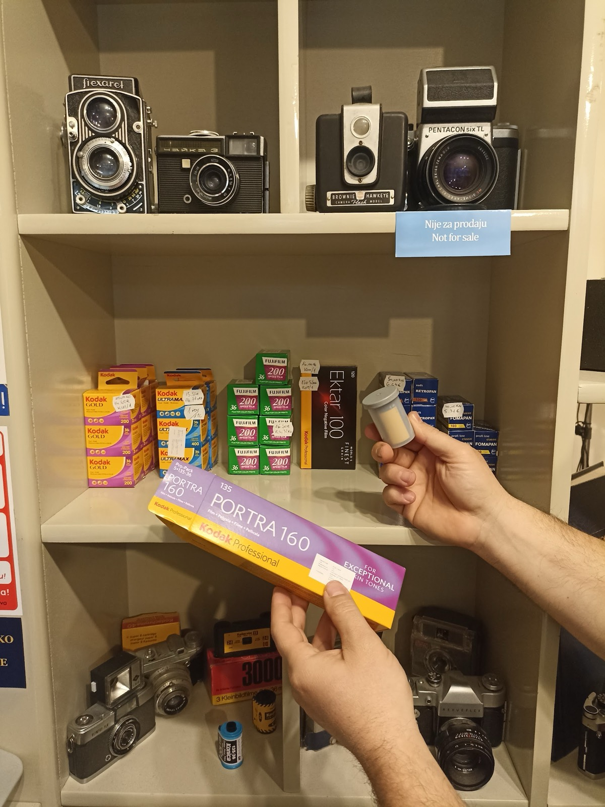
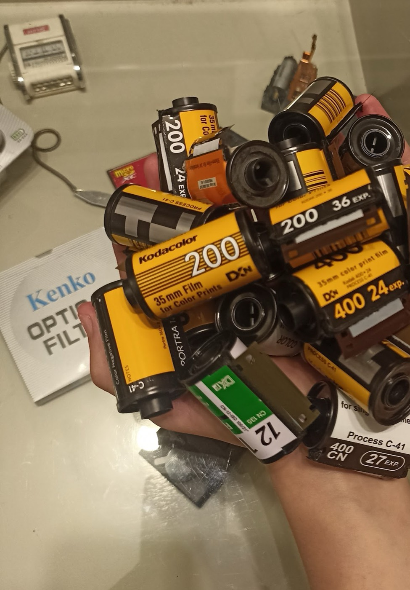
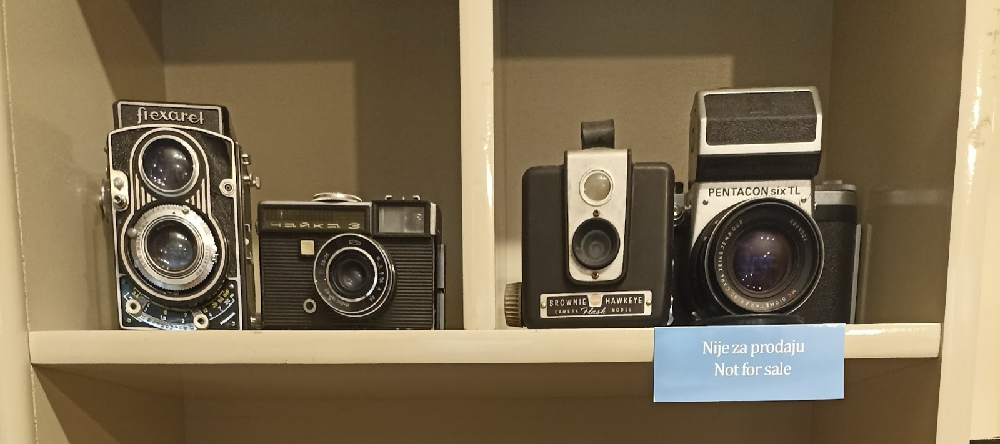

Foto studiou srcu Zadra.Od 1974.
Fotografije za dokumente za dvije minute, analogni filmovi i razvijanje, čišćenje senzora i izrada fotografija – sve na jednom mjestu, u Varoškoj ulici.

Četiri razloga da svratite u Varošku.
Fotografije za dokumente
Osobna, putovnica, vize, brodarska dozvola. Express usluga – oko 2 minute.
Više 02Analogni film
Prodaja 35 mm filmova, tamna komora i razvijanje u C-41 procesu.
Više 03Čišćenje senzora
Prašina na fotografijama? Senzor digitalnog aparata očistimo u studiju.
Više 04Izrada fotografija
Vaše fotografije s mobitela, kartice ili filma – na papiru.
Više
35 mm · color negativeFilm se vratio. Mi nismo ni otišli.
Za one koji snimaju na film: u Foto Lidu kupite rolu, a kad je ispucate – vratite je na razvijanje. Studio ima tamnu komoru i razvija film u C-41 procesu.
- Prodaja 35 mm filmova u boji
- Razvijanje u C-41 procesu
- Tamna komora
- Optički filtri Kenko

Nije za prodaju.
Flexaret, Kodak Brownie, Pentacon Six – stari aparati na polici u Varoškoj podsjećaju odakle fotografija dolazi.
 Foto Lido · Zadar
Foto Lido · ZadarMala radnja u Varoškoj. Puno fotografije.
Foto Studio Lido upisan je kao obrt za fotografske usluge i trgovinu 1974. godine. Danas ga vodi Đon Sereći, a radnja je i dalje na istoj adresi – Varoška 4, nekoliko koraka od Trga pet bunara.
Ovdje se rade fotografije za dokumente, prodaje i razvija film, čisti senzor i izrađuju fotografije. Ako niste sigurni trebate li nešto od toga – svratite ili nazovite.
Prije nego što nazovete.
Koliko traje izrada fotografije za dokument?
Fotografije za osobne dokumente rade se kao express usluga – oko dvije minute od snimanja do gotove fotografije.
Za koje dokumente radite fotografije?
Za sve vrste osobnih dokumenata, uključujući putovnicu, vize i brodarsku dozvolu.
Razvijate li analogni film?
Da. U ponudi su tamna komora i razvijanje filma u C-41 procesu. Za rok i cijenu nazovite studio.
Mogu li kod vas kupiti film?
Da, Foto Lido prodaje 35 mm filmove. Na polici su, primjerice, Kodak Portra, Ektar, Gold i Fujifilm – za trenutačnu dostupnost nazovite.
Čistite li senzor fotoaparata?
Da, u studiju se čisti senzor digitalnog fotoaparata. Donesite aparat u radno vrijeme ili se prije javite telefonom.
Kada ste otvoreni?
Od ponedjeljka do petka od 9 do 13 i od 18 do 20 sati, subotom od 9 do 13 sati. Nedjeljom je zatvoreno.
Svratite u Varošku 4.
Foto Lido
| Ponedjeljak | 9–13 · 18–20 |
| Utorak | 9–13 · 18–20 |
| Srijeda | 9–13 · 18–20 |
| Četvrtak | 9–13 · 18–20 |
| Petak | 9–13 · 18–20 |
| Subota | 9–13 |
| Nedjelja | zatvoreno |